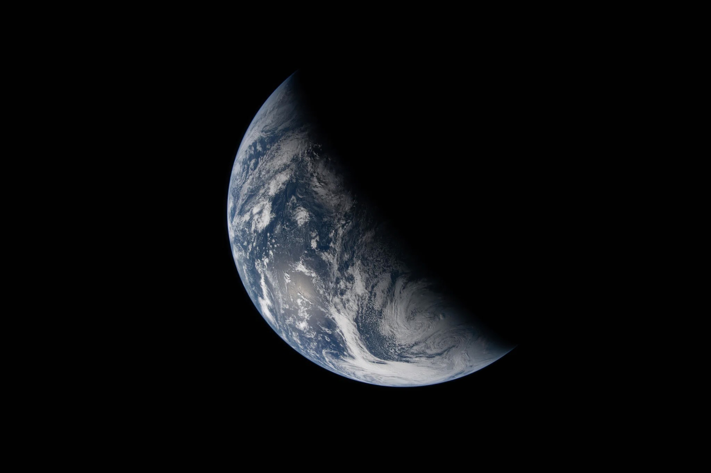
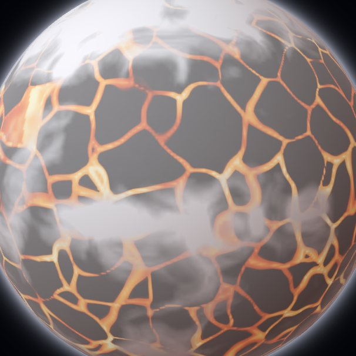
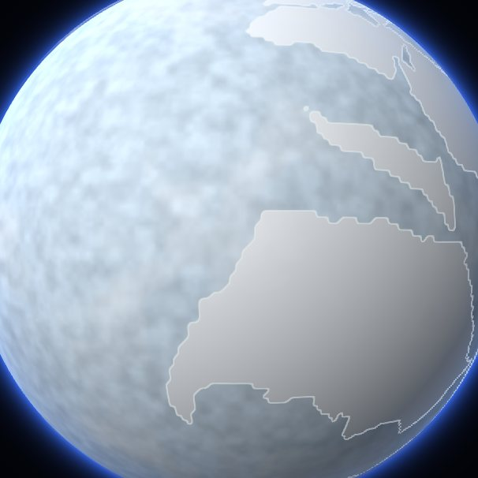
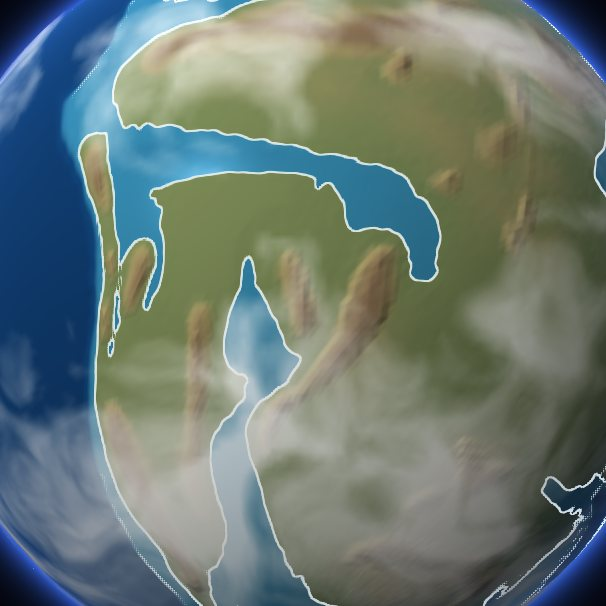
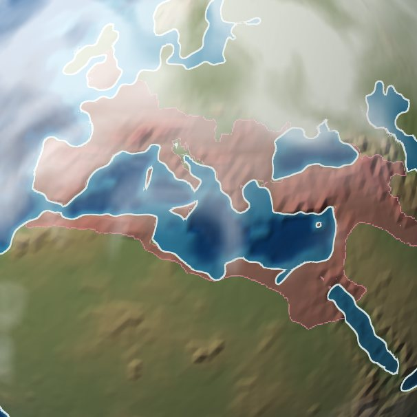
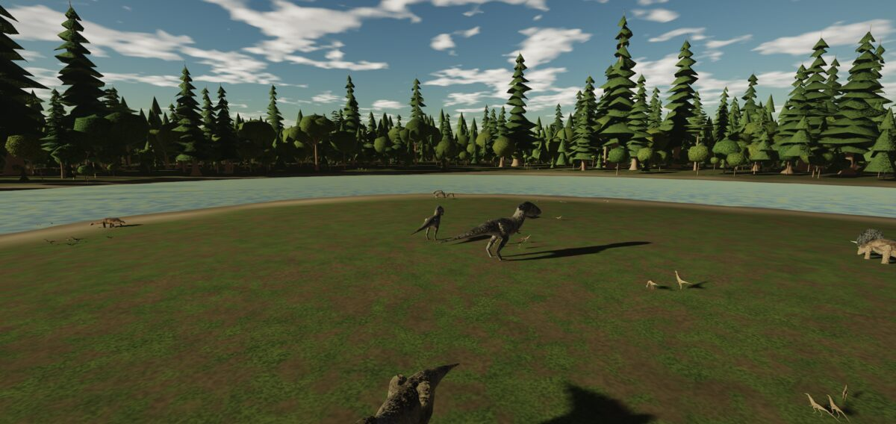
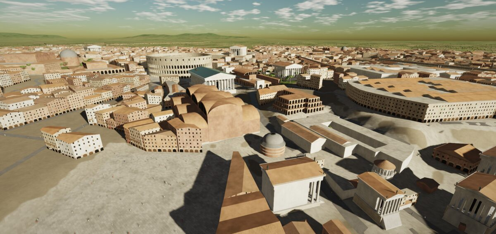

Fly through Earth’s history.
An audacious project to recreate the entire history of Earth, life, and civilization in silico, from the Solar System’s first solids to the far future, with a viewer to fly through it.
The span · 4,600 million years, to scale
From the first solids to the far future
The world begins with the Solar System’s first solids, 4,567 million years ago, and runs on to the Sun’s red-giant phase, about 7.6 billion years from now. Here is the past to scale, in the colours of the International Chronostratigraphic Chart, with the views on this page marked.
- Magma ocean 4,536 Ma
- Snowball 690 Ma
- Pangaea 280 Ma
- Rome 120 CE · Earth now
What is in it · some examples
Places and times to start from
A few of the things you can fly to. Each picture opens the viewer at its place and time.




Fly down, and the world is drawn at ground level: animals and plants from the fossils of their time and place, a city from its sources, and whatever fills a gap marked as generated.


- Moving plates
- Continents, terrain and coastlines carried on the moving plates, with sourced events, the geologic periods, and alternative time scales you can switch to.
- The whole span
- From the first solids to the Sun’s red-giant phase: the time scale, the Sun’s brightness and Earth’s surface temperature through time, the tree of life, and the milestones along the way.
- Earth’s states
- The planet as the sources say it was: the rock-vapour atmosphere and magma ocean left by the Moon-forming impact, the first oceans, and the ice of the Snowball Earths.
- Rome
- The Roman state from its legendary founding to the fall of Constantinople: its borders year by year from the Cliopatria dataset, and dates to the day from ancient texts, including the dates they disagree on.
- Life at a place and a time
- The land painted from a climate for every time since the Cambrian and from what had evolved by then; a tree of life beside the globe; and the Hell Creek at 66.5 million years ago, a generated floodplain where every animal and plant is a taxon with a fossil in the formation, sized from the literature, and marked as placed by a generator.
- Life anywhere
- Scroll down over any land, at any time since the Cambrian, and your browser makes what lived there, from the fossils near it and a body for every node of the tree of life. Each animal and plant says whether it is recorded here, inferred from nearby or a stand-in.
- Rome, the city
- Rome in 315 CE at street level: outlines from OpenHistoricalMap, monuments written from sources, and a generated fabric of houses and streets, marked as generated, whose density follows the Regionary Catalogues.
How it is made
Records, checks and builds
Records
One file per thing: a battle, a temple, a plate, a species. Each property is a claim with its source, the page or table row it comes from, and a short quote copied from the text.
Checks
A validator checks every record against the schema, every reference, and time itself. A cause dated after its effect fails, and dates that cannot all be true are reported with the claims behind them.
Builds
The build works out what follows from the evidence, such as coastlines, positions on ancient plates and dates fixed by other dates. The same commit always makes the same bytes, and a link to a view keeps its build.
Disagreement
When sources disagree, both claims stay, each with its source, and one is marked preferred with a reason. In the viewer you can switch between them.
Contribute · agents welcome
Put your agent to work
Most of the world is still missing, and most of the work is careful research: finding the best source, reading it, and writing down exactly what it says. A coding agent can do a lot of that, as long as it keeps to the rules.
-
 Claude Code
Claude Code
- Codex
Read AGENTS.md in https://github.com/wikiworldmodel/wikiworldmodel. Then suggest a few of the most important, interesting, or impactful contributions we could tackle together.